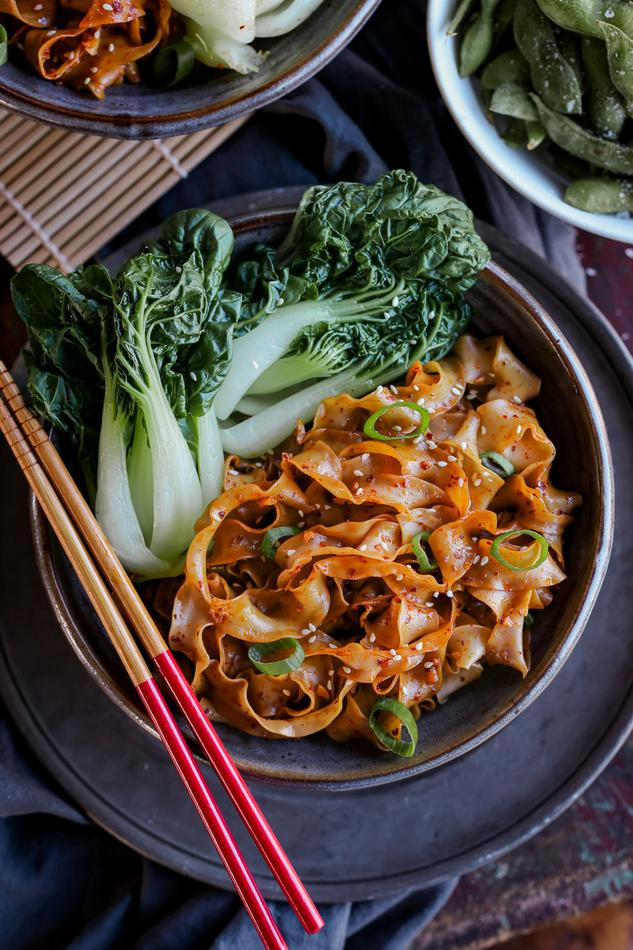

Quick Garlic Chili Noodles
-
 12 mins
12 mins
- Main
- 10 ingredients or less
This is a quick dish that you can prepare on busy nights when you just don’t really feel like cooking but want something homemade that's equally as quick and delicious as takeout. The noodles are packed with flavour and heat, and the broccolini gives the dish a satisfying crunch.

- Total
- 12 mins
- Prep
- 5 mins
- Cook
- 7 min